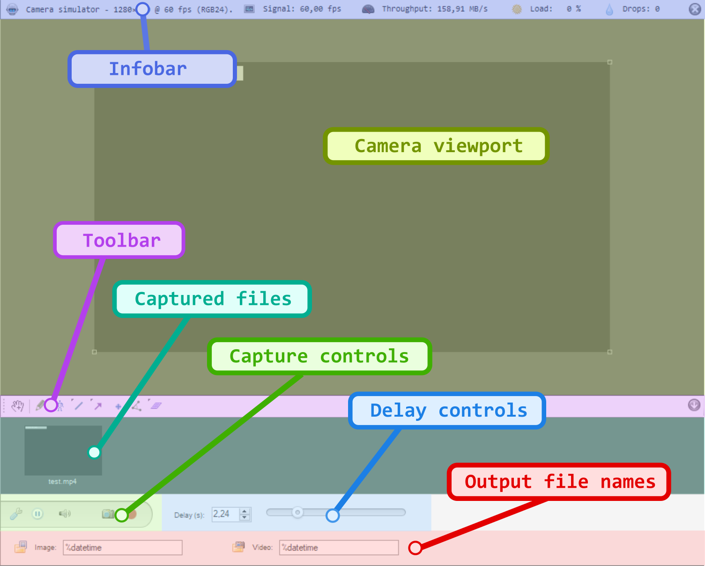
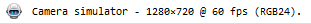
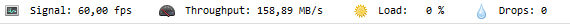
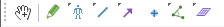
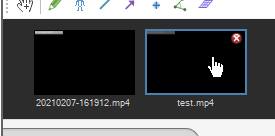
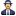
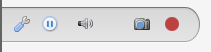
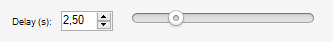
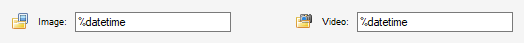

Capture screen user interface¶
The capture screen is divided in the following areas:
1. Camera viewport¶
The camera viewport is the main area where the camera image is visible.
The image itself can be moved around by dragging with the mouse and resized using the manipulators at the corners of the image or by using CTRL + mouse scroll. Drawings on the capture screen can go outside the image area.
If the image stays black, there might be a problem with the available USB bandwidth or power, or the exposure duration might be too short.
If nothing is visible at all, not even the black image rectangle, the camera did not connect correctly; for example, the camera might be in use in another application at the same time.
2. Infobar¶
The infobar contains information about the connected camera and streaming performances.
The first part of the infobar displays the alias of the camera and the current configuration for image size, frame rate and image format. Clicking in this area of the infobar will bring up the camera configuration dialog.
The frame rate indicated is the one configured, the actual frame rate sent by the camera might be different for various reasons like low light levels or hardware limitations.
The second part of the infobar displays the following live statistics:
Signal (fps)¶
This is the frequency at which MotionON is receiving images from the camera. The value is in frames per second.
Many cameras will reduce their frame rate based on various external factors. For example, when a camera uses auto-exposure and the exposure duration computed by the device is incompatible with the selected frame rate.
Throughput (MB/s)¶
This is the amount of data that passes through MotionON as it processes the stream. The value is in megabytes per second, with the convention of one megabyte as 1024 kilobytes.
This value is related to the the image size, frame rate and format, possible on-camera image compression, link bandwidth, and possible post-processing done at the driver level.
You can use this value to estimate the necessary speed for your storage medium to write the uncompressed stream.
In the case of a non-compressed stream in RGB24 format, the value is calculated as follows:
Throughput = (width × height × 3 × frame rate) / (1024*1024)
Load (%)¶
This value describes how much MotionON is struggling to keep up with the camera framerate. It is computed as the time taken to process one frame divided by the interval between frames.
When this value is near 100% it means it takes MotionON the same amount of time to process one frame as the time budget it has for that frame, if it goes over 100% dropped frames may occur.
Drops¶
This is the number of frames that could not be processed by MotionON during the current or last recording session.
If this value is non-zero, some frames are missing from the output video and any measurements involving time will not be perfectly accurate.
3. Toolbar¶
The toolbar contains drawing tools usable on the capture screen. Some tools available in the playback screen are not available in the capture screen.
Some buttons may give access to multiple tools. To access the other tools, right click the button or perform a long press on the button.
The style profile dialog is not currently accessible in the capture screen, in order to change the default style of a tool you need to open a playback screen and change it from there.
4. List of recently captured files¶
This area displays thumbnails of the recently captured files.
Double clicking on a thumbnail opens the file in a playback screen. The close button removes the thumbnail from the list without deleting the file.
Right-clicking on a thumbnails brings a context menu with the following options:
Open |
Opens the video in a playback screen. |
 Open as replay folder observer |
Opens the parent folder of the video in a replay folder observer. |
Locate file in Windows Explorer |
Opens the Windows Explorer on the parent folder of the video. |
Rename |
Make the file name label editable and save the new file name. |
Hide |
Removes this thumbnail from the list without deleting the file. |
Delete |
Sends the file to the Windows trash. |
5. Capture controls¶
The capture controls area contains the following buttons:
Configure camera
Displays the camera configuration dialog to change options like image size or frame rate. The available options depend on the specific camera brand and model.
Pause camera
Pauses or restarts the camera stream. This disconnects the camera. When the camera is disconnected, it is possible to review the last few seconds of action seen by the camera by adjusting the delay.
Disarm capture trigger
Disarms or rearms the audio capture trigger. When the audio trigger is disarmed, audio levels will not be monitored and capture will not be automatically started. The microphone and audio level threshold can be configured from .
 Save image
Save image
Saves the image currently displayed to an image file based on the configured file name and saving directory. The saving directory can be configured from .
Start recording video
Starts or stops recording the video. The video is recorded based on the compression options, recording mode, and naming options found under .
6. Delay controls¶
The delay controls let you adjust the amount of delay, in seconds, of the displayed camera stream with regards to the real time action.
The maximum amount of delay depends on the camera configuration — hardware compression, image format, image size, frame rate — and the memory allocated in the delay cache under .
7. Output file names¶
These fields define the names of the next files that will be saved when exporting an image or capturing a video. They are automatically updated after each recording but can also be modified manually.
The file names can use macros like the current date or the name of the camera. The list of available macros and configuration options can be found under and .
Clicking on the folder buttons will open the main preferences dialog on the relevant page.